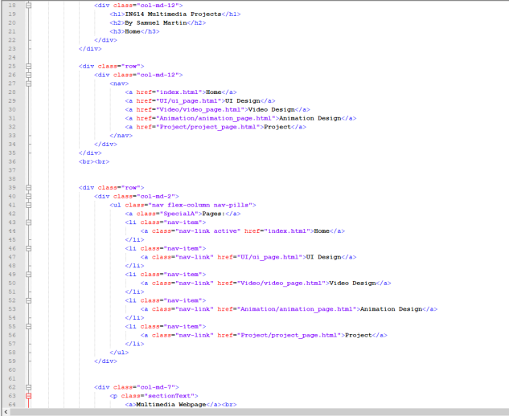
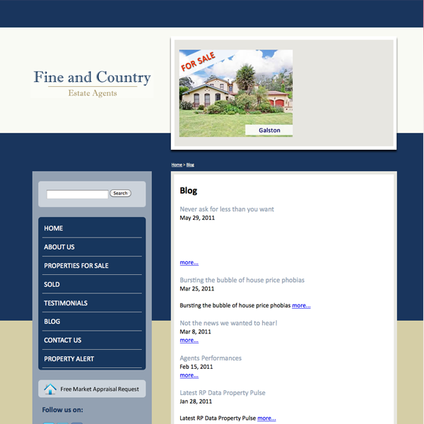
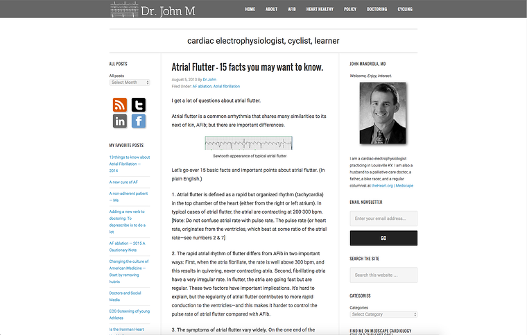

Multimedia Webpage
I created this Web page from scratch using html, css and a little bit of Bootstrap.
And there were a few websites were I got my inspiration from
I designed this website with the idea of having two side bars and a center page.
Where the left side bar contains links to pages relevant to that section.
The right side bar contains links to all of the projects that I have created on the site.
The center section displays information relevant to current page being viewed.
The header spans along the top of the page showing the title, creator and the current project the user is viewing.
I also put a navbar along the top for another way to navigate to other sections.
I prefered having different sections on different pages instead of all the content on one page.
This makes it easier for the user to navigate around the site and find a certain section.
For the color scheme I used a dark color for the background to makes the light sections stand out more
Here is an example of the html I wrote to create the sections

For bootstrap I used some components from
https://www.layoutit.com/
The components that I used were the rows, columns (left, center, right) & navbar along the top.
Websites that I looked at and liked the design of them:
Melon
This was the site that I got most of my inspiration from.
I liked this design because it had a nice layout where it is divided into three sections
It has links divided into sections on the left column.
The main content is in the center section.
It also has a nice header nav bar containing links to different pages.
Fine and Country
http://www.saucedout.com.au/web_design/forums-blogs-social-media/blog-examples.shtml#

I liked the simple design of this site. The side bar on the left looked quite nice with some links.
Dr. John M
https://www.kunocreative.com/blog/healthcare-blog

I liked the three section design of this site. Where there are two side bars containing links on the right & left and the content in the center.